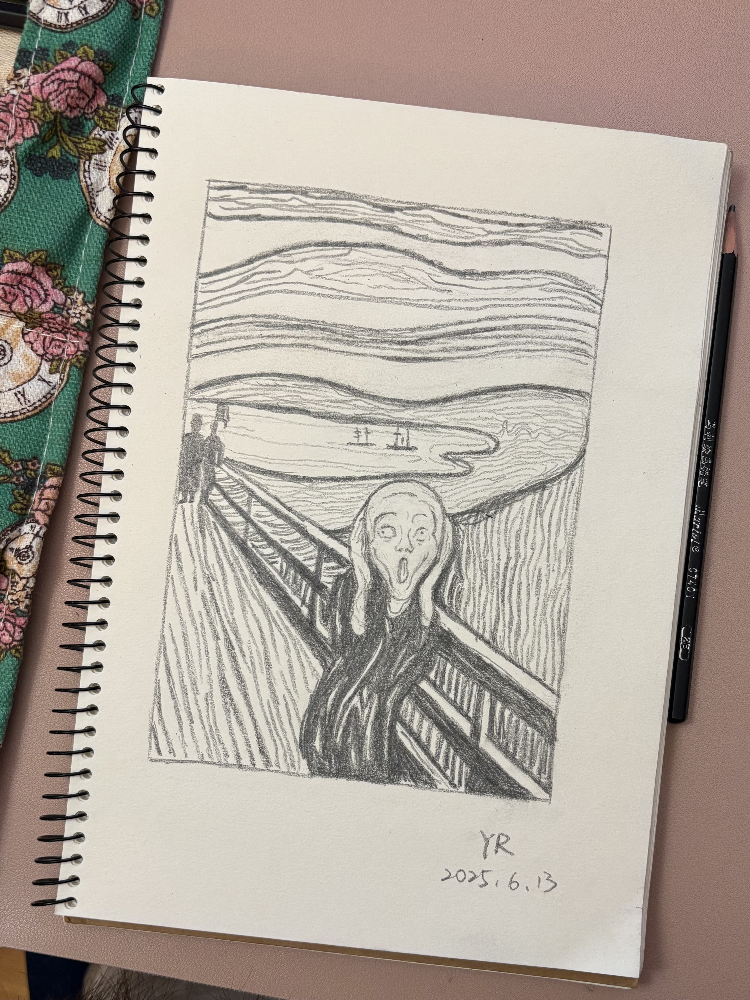

Colored pencil of boat KimColored pencil of a red stuga on Lilla RisholmenColored pencil of a light tower on the west coast of SwedenCarbon-pen and pencil of the Yingxian Wooden Pagoda in China

A pencil study of Munch’s The ScreamPencil sketch of a Chinese cabbage